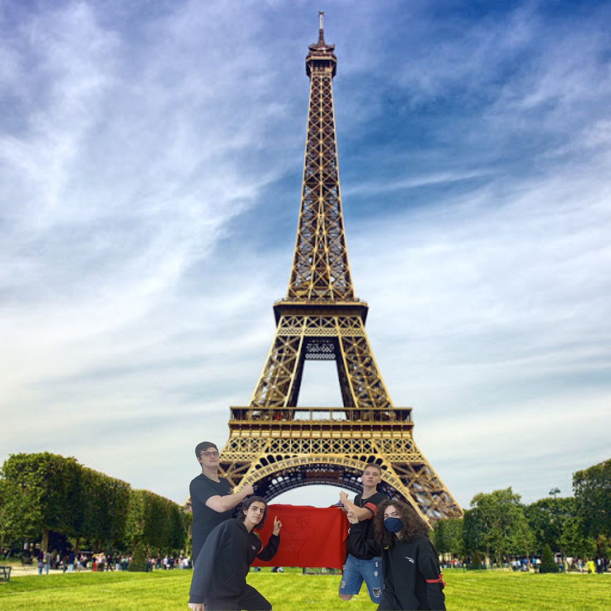

Torre Eiffel
Curiosidades sobre este local
- Durante a Primeira Guerra Mundial, em 1914, a Torre Eiffel servia como meio de comunicação entre as tropas francesas, enviando sinais a partir da parte superior da torre com o intuito de as dirigir para a linha de frente.
- Poucas pessoas sabem que é proibido tirar fotos da torre durante a noite, quando as luzes estão acesas. Para isso, deve-se antes entrar em contato com a "Société Nouvelle d' Exploitation de la Tour Eiffel" (SNTE) e pagar uma taxa de direitos autorais. Isso não é necessário durante o dia.
- No século XX, 72 dos mais renomados cientistas da França entre engenheiros e pessoas notáveis foram gravados na base da torre.